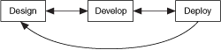

When you create a large application, consider the individual needs of the application. You can develop large applications in multiple ways. As shown in the following illustration, the order in which you design, develop, and deploy is not always the same.

According to the illustration, you should design and plan your code when you begin developing a large application. When you develop, use available techniques and tools to create the large application. As you develop and encounter unanticipated considerations, continue to design parts of the large application. Deploy as you develop so that you can test individual code as well as the large application as a whole. If you receive unexpected results, continue to design and develop.
Note Test periodically as you develop to find areas for improvement in a large application.
Use the following tables to find more information about creating a large application.